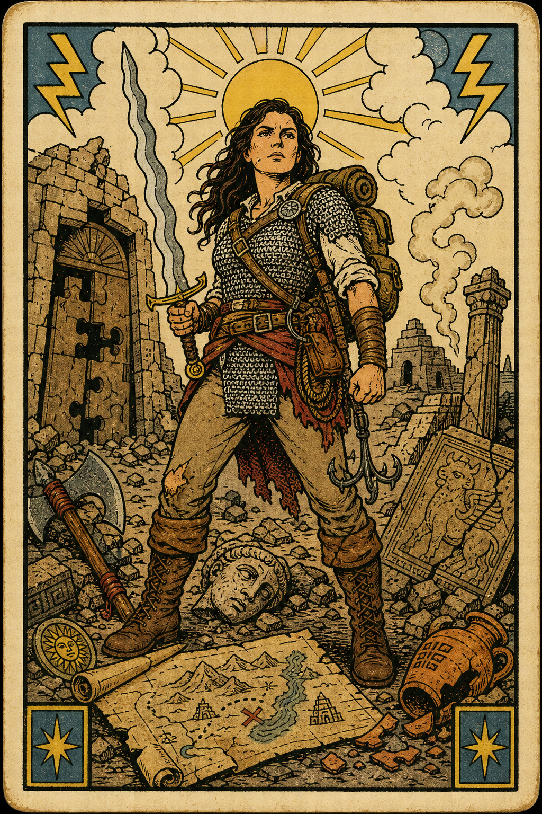

Player Character
Julie
Human / Fighter (Champion) / Level 5
AC17
Init+2
Prof+3
Speed30 ft
Edit OverviewEdit
ClassFighter
SubclassChampion
RaceHuman
BackgroundArcheologist
Experience8000
Gold0
Hero Points0
Guild RankE
Guild Points51
Edit AbilitiesEdit
Strength18+4
Dexterity14+2
Constitution16+3
Intelligence6-2
Wisdom11+0
Charisma11+0
Edit CombatEdit
Armor Class17
Initiative+2
Proficiency+3
Speed30 ft
Simple Melee+7
Simple Ranged+5
Martial Melee+7
Martial Ranged+5
Spell Attack-
Spell Save DC-
Weapon Attacks
Edit Combat StatsEdit
Edit HealthEdit
Edit AbilitiesEdit
Saving Throws
Strength+7
Dexterity+2
Constitution+6
Intelligence-2
Wisdom+0
Charisma+0
Skills
Acrobatics DEX+5
Animal Handling WIS+0
Arcana INT-2
Athletics STR+7
Deception CHA+0
History INT-2
Insight WIS+0
Intimidation CHA+3
Investigation INT-2
Medicine WIS+0
Nature INT-2
Perception WIS+3
Performance CHA+0
Persuasion CHA+0
Religion INT-2
Sleight of Hand DEX+2
Stealth DEX+2
Survival WIS+3
Edit EquipmentEdit
ClassFighter (Champion)
BackgroundArchaeologist
FeatsGreat Weapon Master, Tough
RaceHuman
No extra class features recorded.